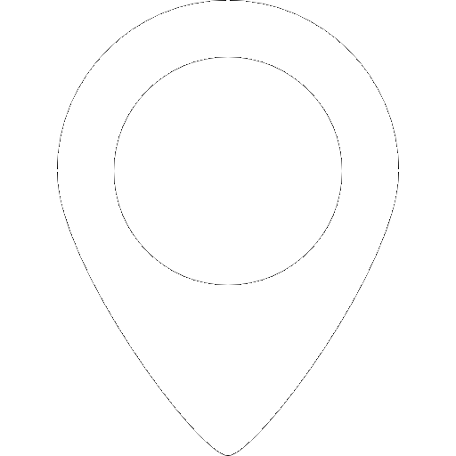
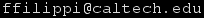

Filippos Filippitzis
PhD Candidate at the California Institute of Technology

Pasadena, California Github
Github-

About me
I am a PhD student at the California Institute of Technology working with Thomas Heaton and Monica Kohler. My current ongoing research is centered around developing a damage identification framework for civil infastructure (high-rise buildings in particular). A recent side-project that I have been working on, as a part of Caltech's Community Seismic Network (CNS), concerns data processing and analysis. I’m interested in developing parameter estimation algorithms, by updating parameterized physics-based models learning from the data.
For a short summary of my past work/experiences, you can find my resume here.
Take a look at the /Links page for more links.